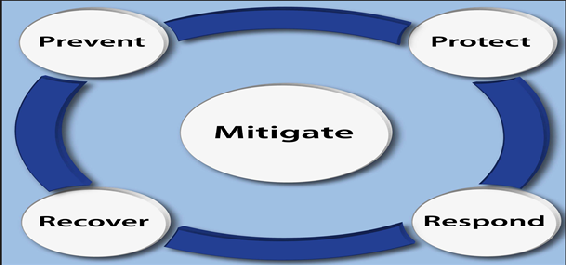
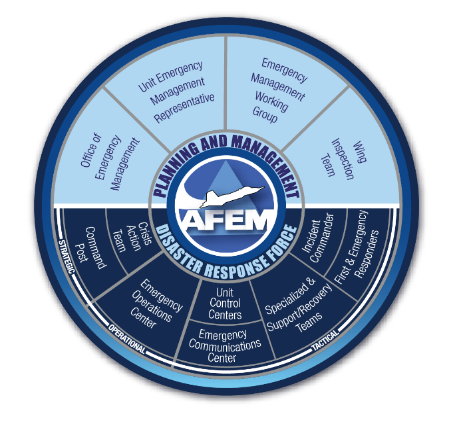
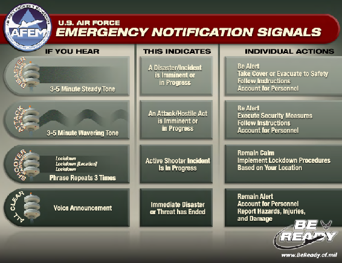
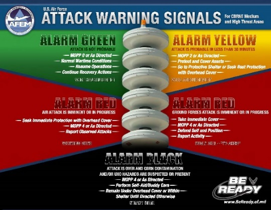
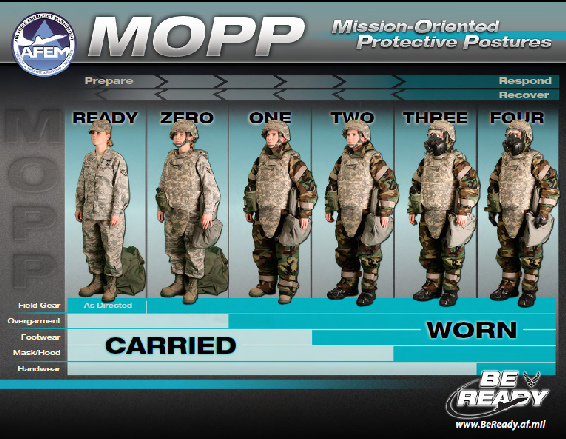

Chapter 5
EMERGENCY MANAGEMENT
Section 5A—Overview
5.1. Introduction.
The ability of the United States Air Force to carry out its mission of Global Vigilance, Global Reach, and Global Power directly depends on continuance of the mission in the face of adversity. Challenges to mission accomplishment take many forms ranging from natural disasters, man-made incidents, terrorist use of weapons of mass destruction, and hostile attacks that threaten United States interests. The Air Force Emergency Management Program was developed to ensure the readiness of our Total Force to prepare for, respond to, and recover from the effects of incidents that endanger the lives of personnel and jeopardize mission accomplishment. Airmen may be called upon to serve the program in a variety of ways; from attending localized emergency preparedness briefings to being a member of a specialized team. In today’s threat-laden environment, every Airman must play their part to ensure their installation has a successful Emergency Management program.
Section 5B—Emergency Management Program and Air Force Incident Management System
5.2. Air Force Emergency Management Program.
Protection of personnel and operational resources is essential to successful Air Force operations. The Air Force Emergency Management program develops and implements measures for, and manages activities related to, emergency preparedness, incident management, response and recovery operations, chemical, biological, radiological, and nuclear defense, and consequence management.
5.2.1. The primary mission of the Air Force Emergency Management Program is to save lives; minimize the loss or degradation of resources; and continue, sustain, and restore operational capability in an all-hazards physical threat environment at Air Force installations worldwide. The ancillary missions are to support homeland defense and civil support operations and to provide support to civil and host nation authorities according to Department of Defense publications and through the appropriate combatant command. These missions are accomplished using the Air Force Incident Management System, which employs the installation disaster response force, as the structure for all responses.
5.2.2. The Air Force Emergency Management Program contributes to mission assurance, which is defined as the process to protect or ensure the continued function and resilience of capabilities and assets—including personnel, equipment, facilities, networks, information, and information systems, infrastructure, and supply chains in any operating environment or condition, and the continuation of mission essential functions necessary to perform the operations of the installation in support of the national military strategy.
5.3. The Five Emergency Management Mission Areas.
The Air Force Emergency Management program mission areas (Figure 5.1.) include prevention, protection, response, recovery, and mitigation. They are met through preparedness, which includes actions to plan, organize, equip, train, and exercise prior to disasters and incidents.
Figure 5.1. Mission Areas. |
 |
5.3.1. Prevention
includes the capabilities necessary to avoid, prevent, or stop a threatened or actual act of terrorism.
5.3.2. Protection.
Protection provides the capabilities necessary to protect the installation against all threats and hazards, and manmade or natural disasters.
5.3.3. Response.
Response includes actions taken to save lives, protect property, and mitigate the effects of an incident.
5.3.4. Recovery.
Recovery includes operations such as implementing casualty treatment, unexploded explosive ordnance safing, personnel and resource decontamination, airfield damage repair, and facility restoration. Response contains three essential elements; notification, response, and protective actions.
5.3.5. Mitigation.
Mitigation comprises the capabilities necessary to reduce the loss of life and property by lessening the impact of future disasters. These capabilities are designed to reduce or eliminate risks to persons or property or to lessen the actual or potential effects or consequences of a disaster or incident.
5.4. Air Force Incident Management System.
The Emergency Management program accomplishes its mission through the Air Force Incident Management System which utilizes the disaster response force. Air Force Incident Management System aligns Emergency Management planning and response with Homeland Security Directive 5, Management of Domestic Incidents; the National Incident Management System; the National Response Framework, and Office of the Secretary of Defense guidance while preserving unique military requirements. The system provides the Air Force with a single, comprehensive approach to incident management while allowing scalable and flexible response options to organize field-level operations for a broad spectrum of emergencies.

Figure 5.2. Installation Emergency Management Program Structure – Disaster Response Force.
5.5. Air Force Emergency Management Structure.
The Air Force Emergency Management program has two structural elements; a strategic planning and management staff to maintain the Emergency Management program and a disaster response force to manage or conduct incident response operations (Figure 5.2.). The planning and management staff provide an overall cross-functional installation risk management program for developing threat and hazard plans and budget, and is comprised of four functions; the office of emergency management, unit emergency management representatives, the emergency management working group, and the wing inspection team. See AFI 10-2501, Air Force Emergency Management Program, for definitions of planning and management functions. The disaster response force are the organizational functions that respond to disasters or accidents to establish command and control and support disaster operations. The disaster response force includes the Crisis Action Team, Emergency Operations Center, unit control centers, Command Post, incident commander, first and emergency responders, and specialized and support recovery teams.
5.5.1. Crisis Action Team.
The Crisis Action Team directs strategic actions supporting the installation’s mission. This team is activated to provide a command, control, and communication link to higher headquarters and comparable civilian agencies and to coordinate the incident response.
5.5.2. Emergency Operations Center.
The Emergency Operations Center is the command and control support element that coordinates information and resources to the installation actions before, during, and after an incident.
5.5.3. Unit Control Center.
Unit control centers provide response and recovery support to the Incident Commander as directed by the Emergency Operations Center and mission support to the installation commander as directed by Crisis Action Team. Unit control centers provide a focal point within an organization to maintain unit command and control, relay information to and from unit personnel, provide expertise to the emergency operations center or the incident commander, and leverage unit resources to respond to and mitigate the incident.
5.5.4. Command Post.
As a command and control node, the command post assists in directing installation emergency management and response actions. The command post maintains notification rosters, provides and collects information from the unit control centers, and coordinates with the crisis action team and the Emergency Operations Center.
5.5.5. Incident Commander.
The incident commander is a trained and experienced responder that provides on-scene tactical control using subject matter experts and support from other functions. Fire Emergency Services is the incident commander for all incidents involving two or more response agencies.
5.5.6. First Responders.
First responders deploy immediately to the scene to provide initial command and control, to save lives, and to suppress and control hazards. First responders include fire and emergency services, security forces, and medical personnel.
5.5.7. Emergency Responders.
Emergency responders deploy after the first responders to expand command and control and provide additional support. Emergency responders include emergency management, explosive ordnance disposal, bioenvironmental engineering personnel and may include other subject matter experts.
5.5.8. Specialized and Support Recovery Teams.
Specialized teams are formed from the existing installation and unit personnel resources to support emergency response operations. Specialized teams include the emergency management support team, shelter management team, contamination control team, post-attack reconnaissance team, and other specialized teams.
Section 5C—Protective Measures and Response Procedures
5.6. Protective Measures.
Threats and hazards that may affect your installation could be natural, man-made, or technological. Disasters or incidents resulting from a threat or hazard can occur at any time with little or no advance warning. These incidents can be local or widespread, predictable or unpredictable. There are ways to prepare for and cope with these events, regardless of the type of incident. Take time to think; then act according to the situation. Installations, as well as individuals, need to identify local threats and hazards, prepare early, and develop emergency plans. For preparation guidance, contact the installation readiness and emergency management flight and visit the Air Force “Be Ready” website (http://www.beready.af.mil/).
5.7. Air Force Emergency Notification Signals.
Every Air Force installation must have a rapid and effective system to quickly disseminate emergency information such as watches, warnings, evacuation routes, and protective actions. When a disaster or incident affecting the base is imminent or in-progress, personnel must respond to directions communicated over mass notification and warning systems (Figure 5.3). These messages may be visual or audible. Make sure you know how notifications and warnings are executed at your installation to ensure you are promptly informed and ready to properly respond to local emergencies.
Figure 5.3. U.S. Air Force Emergency Notification Signals.
|
 |
5.8. Personnel Sheltering.
All installations are required to conduct threat-based shelter planning. Shelter selection is based on structural and personnel housing capabilities in relation to the types of disasters. Personnel must know where their shelter is located and understand shelter-processing procedures. Shelter-in-place is used to provide temporary protection in a structure for short or no-notice emergencies, such as hazardous material incident or a tornado, when the type or extent of the hazard is unknown and/or evacuation at the time would be dangerous. Active shooter lock-down procedures are not the same as those used for shelter-in-place. Refer to AFMAN 10-2502, Air Force Incident Management Standards and Procedures, for shelter planning information. Wartime sheltering addressed in paragraph 5.17.4 and AFMAN 10-2503, Operations in a Chemical, Biological, Radiological, Nuclear, and High-Yield Explosives (CBRNE) Environment.
5.9. Response Procedures.
Commanders must be able to maintain the primary installation mission, save lives, mitigate damage, and restore mission-essential resources following disasters or incidents. Response levels will depend on the magnitude of the incident and degree of damage. Each installation must develop disaster response plans and policies to address local threats and hazards. The installation emergency management plan 10-2 is the vehicle for installation planning and response. The plan provides comprehensive guidance for emergency response to natural (geological, meteorological, and biological hazards), human-caused (accidental and intentional) or technological incidents. These categories are detailed in the following sections.
Section 5D – Natural Disaster, Man-Made Physical and Technological Hazards
5.10. Natural Disasters.
Natural disasters and severe weather can create emergency conditions that vary widely in scope, urgency, and degree of damage and destruction. The installations must develop plans for the hazards likely to affect their location. Specific actions taken in response, mitigation, and recovery will vary. A national-level response may be required to help an Air Force installation recover from large-area natural disasters.
5.10.1. Natural disasters are categorized as geological, meteorological, or biological hazards. Natural geological hazards include earthquake, tsunami, volcano, landslide, and mudslide, subsidence (i.e. sinkholes, glacier, and iceberg). Natural meteorological hazards include: flood, flash flood, tidal surge, drought, fire, snow, ice, hail, sleet, avalanche, windstorm, tropical cyclone, hurricane, tornado, water spout, dust or sand storm, extreme temperature (heat, cold), lightning strikes, and geomagnetic storm. Natural biological hazards include diseases that impact humans or animals such as plague, anthrax, botulism, smallpox, tularemia, viral hemorrhagic fevers, West Nile Virus, foot and mouth diseases, severe acute respiratory syndrome, and pandemic disease.
5.11. Human Caused Hazards.
Installations are threatened with the possibility of catastrophic man-made hazards, whether accidental or intentional. All installations must prepare for, and quickly respond to major accidents to prevent the loss of life, preserve valuable resources, and protect the environment.
5.11.1. The Department of Defense is responsible for responding to incidents involving its resources or resulting from Department of Defense activities. The military installation, regardless of size, nearest the scene of the accident or incident will respond to the event unless otherwise directed by higher headquarters. Upon witnessing an accident or incident, personnel should alert others in the immediate area and report the incident to security forces, fire and emergency services, or installation command and control. After reporting the accident, personnel should:
5.11.1.1. Stay uphill and upwind. Avoid inhaling fumes, smoke, or vapors.
5.11.1.2. Attempt to rescue and care for casualties.
5.11.1.3. Avoid handling any material or component involved in the accident/incident.
5.11.1.4. Evacuate the area if rescue or containment is impractical, or if directed to evacuate.
5.11.2. Man-Made Accidental.
Man-made accidental incidents include hazardous materials (for example, explosive, flammable liquid, flammable gas, flammable solid, oxidizer, poison, radiological, corrosive) spill or release. An explosion or fire; transportation accident; building or structure collapse; energy, power, or utility failure; fuel or resource shortage; air or water pollution or contamination; dam, levee, or other water control structure failure; financial issues including economic depression, inflation, financial system collapse; and communication system interruption.
5.11.3. Man-Made Intentional.
Man-made intentional incidents include terrorism, sabotage, civil disturbance, public unrest, riot, strike or labor dispute, disinformation, criminal activity (vandalism, arson, theft, fraud, embezzlement, and data theft), electromagnetic pulse, physical or information security breach, active shooter, and product defect or contamination. An overview of man-made intentional incidents involving enemy or terrorist use chemical, biological, radiological, and nuclear is provided in Section 5E.
5.11.3.1. An active shooter is an individual actively engaged in killing or attempting to kill people, most often in populated areas. In most cases, active shooters use firearms and there is no pattern or method to their selection of victims. In some cases, active shooters use improvised explosive devices to create additional victims and impede first responders.
5.11.3.1.1. Lockdown is declared to protect personnel from an Active Shooter incident and is a base-wide protective action used to restrict the movement of personnel and to aid law enforcement first responders in neutralizing the shooting suspect as quickly as possible. During lockdown, no person may exit or enter another area until the all clear is broadcasted; unless movement is required to escape from a dangerous place or situation.
5.11.3.1.2. If you find yourself involved in an active shooter situation, remain calm, quickly determine the most reasonable way to protect your own life. If an escape route is accessible, evacuate the immediate area. If evacuation is not possible, find a place to create a barricade between you and the active shooter. As a last resort, and only when your life is in imminent danger, attempt to disrupt and/or incapacitate the shooter.
5.11.4. Technological.
Technologically caused incidents include central computer, mainframe, software, or application (internal and external); ancillary support equipment; telecommunications; and energy, power, utility, or nuclear power plant failure.
Section 5E— Enemy Attack and Terrorist Use of Chemical, Biological, Radiological, and Nuclear Weapons
5.12. Chemical, Biological, Radiological, and Nuclear Hazards.
Chemical, biological, radiological, and nuclear, as well as toxic industrial material, hazards cause adverse effects through deliberate release and dissemination. Installation chemical, biological, radiological, and nuclear defense requires an installation-wide team that includes all personnel to plan, prepare, respond and recover from a chemical, biological, radiological, and nuclear incident. Chemical, biological, radiological, and nuclear preparedness and defense measures are intended to balance mission continuation with force survivability to maximize mission effectiveness within a chemical, biological, radiological, and nuclear environment. An awareness of the hazards and protective actions will help you protect yourself in the event of a chemical, biological, radiological, and nuclear attack.
5.13. Chemical, Biological, Radiological, and Nuclear Threat Agents.
Each chemical, biological, radiological, and nuclear threat agent presents a unique hazard. Airmen should know the importance of understanding what the characteristics, symptoms, and protective factors are for all chemical, biological, radiological, and nuclear threat agents relative to the deployed location.
5.13.1. Chemical. Chemical agents are chemical substances that are intended for use in military operations to kill, seriously injure, or incapacitate mainly through their physiological effects. Chemical agents are categorized according to their physiological effects: lung damaging agents (choking), blister agents, blood agents, incapacitating agents, and nerve agents. Also included in the chemical hazards classification are toxic industrial chemicals. Chemical agents can be delivered through a variety of means such as tactical ballistic missiles, bombs, artillery, grenades, mines, and spray attacks. Due to their persistent nature, nerve and blister pose the primary threat to air bases.
5.13.2. Biological. A biological agent is a microorganism (or a toxin derived from it) that causes disease in personnel, plants, or animals or causes the deterioration of materiel. Biological agents include viruses, bacteria, fungi, and toxins cultured from living organisms. Biological agents may be found as liquid droplets, aerosols, or dry powders and can be adapted for use as an adversarial weapon. Biological agents can be delivered through a variety of means such as spray attacks, aerosol releases, or covert attacks. Personnel may not experience symptoms immediately after being exposed to biological agents. Each agent has a different exposure (or incubation) period before infection.
5.13.3. Radiological and Nuclear. Radiation is a broad term that applies to a wide range of phenomena. Light (infrared to ultraviolet), radiofrequency emissions and microwaves are all forms of radiation known as nonionizing radiation. In general, nonionizing radiation produces heat when it interacts with the body. In contrast, ionizing radiation has sufficient energy to produce ions when it interacts with matter (including the human body). Radiation causes harmful effects to personnel because the ionization and excitation alters or destroys cell processes and structures essential for the normal functioning of the cell.
5.13.3.1. Radiological Delivery Means. Adversaries may disseminate radioactive materials by utilizing a radiological dispersal device. This device disseminates radioactive material across an area without a nuclear detonation. A radiological dispersal device could function as a terror weapon or terrain-denial mechanism. For example, a radiological dispersal device could function by using conventional explosives to blow-up and scatter radioactive source debris across a relatively small area; this device is also known as a dirty bomb.
5.13.3.2. Nuclear Delivery Means. Nuclear weapons can be detonated at various altitudes to include subsurface, surface, airburst, or high altitude. The primary concerns of a nuclear detonation include blast/shock, thermal radiation (heat), ionizing radiation, and ballistic debris for surface and shallow subsurface bursts. Nuclear blasts may also pose an electromagnetic pulse hazard that can cause widespread communications and/or electrical problems. Each type of burst has a different level of hazard ratio in regards to ionizing radiation, thermal radiation, and blast/shock. For example, a subsurface burst may produce a high level of blast and shock, but very little (if any) ionizing radiation penetrating outside the surface of the earth.
5.13.4. Toxic Industrial Material. Toxic industrial material hazards consist of toxic industrial chemicals, toxic industrial biologicals, and toxic industrial radiological material. Toxic industrial materials may be manufactured, stored, distributed, or transported in close proximity to airbases. These widely available toxic industrial materials are potential tools for asymmetric attacks against airbases. Most present a vapor (inhalation) hazard. Toxic industrial materials may also reduce the oxygen concentration below that required to support life. If there is a toxic industrial material incident, the most important action is immediate evacuation outside the hazard’s path (if feasible). Airmen must note that the protective mask, ensemble, and military standard collective protection filters are not designed to provide protection from toxic industrial materials. If evacuation is impractical, implement shelter-in-place procedures.
5.14. Enemy Chemical, Biological, Radiological, and Nuclear Attack.
The Armed Forces of the United States must be prepared to conduct prompt, sustained, and decisive combat operations in chemical, biological, radiological, and nuclear environments. An adversary‘s chemical, biological, radiological, and nuclear capabilities can have a profound impact on United States and multinational objectives, campaign plans, and supporting actions, and therefore must be taken into account in planning. Adversaries use chemical, biological, radiological, and nuclear to disrupt efficient airbase mission operations, incapacitate and kill personnel, and contaminate equipment, rendering it unusable or dangerous to use. Deterring an adversary‘s use of chemical, biological, radiological, and nuclear weapons depends to a significant degree on effective preparations by the defender to deny the adversary any meaningful advantage from the employment of such weapons.
5.15. Chemical, Biological, Radiological, and Nuclear Defense Actions.
Operations in a chemical, biological, radiological, and nuclear environment are intended to balance mission continuation with force survivability to maximize mission effectiveness during and after a chemical, biological, radiological, and nuclear event. In-place and deployed forces must be prepared to conduct combat operations as required by Air Force, major command, or theater directives. When a crisis or conflict arises, mobility operations and force deployment begin.
5.16. Installation Command and Control.
Effective chemical, biological, radiological, and nuclear command and control is essential to mission accomplishment and base survivability. Effective wartime operations require coordinated and integrated actions at all levels. Installation command and control, in conjunction with the emergency operations center and unit control centers, implements operational plans and priorities, controls and monitors mission-generation capabilities, and ensures installation survivability.
5.17. Individual Protection:
5.17.1. Individual protection is comprised of singular use or a combination of individual protective equipment, vaccinations and prophylaxis, protective shelters, evacuation, relocation, exposure control, contamination control, and warning and notification systems. Measures are taken in stages equal to the urgency and nature of the threat. Command and theater-specific instructions will direct the proper individual protective postures.
5.17.2. Regardless of the type of agent, concentration, or method of attack, the best immediate protective equipment against chemical agents is the ground crew ensemble, a whole-body system which protects the wearer against chemical-biological warfare agents, toxins, and radiological particulates. Individual protection includes a protective mask with filters, overgarment, protective gloves, and footwear covers or overboots, and includes M8 and M9 detector paper, reactive skin decontamination lotion and M295 decontamination kits.
5.17.3. Nerve Agent Antidote. Medical representatives issue nerve agent antidotes and pretreatment during increased readiness. Additionally, medical representatives will issue pyridostigmine bromide tablets (P-tabs) if they anticipate use of a specific type of nerve agent. Members will take these tablets only if/when directed by the commander. The tablets, when combined with the antidote, will limit the effect of certain types of nerve agent poisoning.
5.17.4. Chemical, Biological, Radiological, and Nuclear Wartime Sheltering. The installation commander is responsible for establishing a shelter plan and should designate unit responsibility for preparing and operating each shelter during a chemical, biological, radiological, and nuclear event. Shelters are structures that protect personnel from chemical, biological, radiological, and nuclear effects over extended periods. Walls, doors, and windows offer limited physical barriers to chemical, biological, radiological, and nuclear hazards penetration. Heating, ventilation, and cooling systems should be shut off to prevent chemical, biological, radiological, and nuclear hazard spread. Personnel may be required to shelter-in-place in the event the type or extent of the hazard is unknown and/or evacuation at the time would be dangerous.
5.17.5. Collective Protection Systems. These systems provide protection from chemical, biological, radiological, and nuclear agents using an overpressure system to keep threat agents outside the facility, ultimately allowing the occupants to work or rest inside the facility without wearing protective gear. Many of these facilities will have integrated contamination control areas, meaning contaminated personnel are able to enter the facility once decontaminated. Installations with collective protection systems should develop local procedures and provide base populace training, as required.
5.18. Chemical, Biological, Radiological, and Nuclear Incident Management Phases.
Air Force units must take actions to prepare for, respond to, and recover from or mitigate the effects of a chemical, biological, radiological, and nuclear attack or event. These actions will ensure we can conduct prompt, sustained, and decisive combat operations in chemical, biological, radiological, and nuclear environments.
5.18.1. In each phase, consistent approaches or actions are designed to save lives and to restore and sustain mission operations. Airbase attack preparation begins before a potential attack. Attack response actions focus primarily on individual and weapon systems survival, and recovery actions focusing on saving lives, detecting and mitigating hazards, mission restoration, and sustainment.
5.19. Preparedness.
Countering chemical, biological, radiological, and nuclear threats requires extraordinary preparedness. Conducting preparedness actions effectively and efficiently will increase the protection of mission critical resources and force survivability. These actions should be considered mission critical and given a high priority when the threat of enemy attack using chemical, biological, radiological, and nuclear agents is high. Your installation will establish several actions to counter chemical, biological, radiological, and nuclear attacks during the preparedness phase. These actions will be dependent on your installation’s threat probabilities and Airmen should understand the importance of knowing these actions well before a chemical, biological, radiological, and nuclear attack. They include actions associated with alarm conditions, mission-oriented protective postures, split mission oriented protective posture, and contamination control. Actions begin upon receipt of the warning order or when the in-place forces are directed to transition to wartime operations. Installations will refer to their risk management plan and implement actions according to major command and theater guidance.
5.19.1. Alarm Conditions and Mission-Oriented Protective Posture Levels.
Attack warning signals are established and used to notify base populace of emergency conditions. The warnings may be communicated as audible alarms, through base public address and/or giant voice systems, display of alarm condition flags, or through other communication channels. The Air Force uses a standardized alarm system (see Figure 5.4) and mission-oriented protective posture levels to communicate the appropriate defense posture for in-place forces to take to transition to wartime chemical, biological, radiological, and nuclear operations. Attack warning signals are used to posture air base for attacks, warn of attacks in progress, initiate post attack recovery actions, and return the airbase to a normal wartime state of readiness. Attack warning signal variations may be used in some geographical regions. If used, Airmen will be notified of the variations before departure from home station or upon arrival into the region. For example, Alarm Blue is used instead of Alarm Red in South Korea. Mission-oriented protective postures are used in conjunction with alarm conditions quickly increase or decrease protection against chemical, biological, radiological, and nuclear threats.
5.19.2. Mission-Oriented Protective Postures.
Mission Oriented Protective Postures levels (Figure 5.5) are established to quickly communicate required individual protective equipment and protection levels. The levels are designed to allow a rapid increase or decrease personal protective equipment in response to chemical, biological, radiological, and nuclear attack alarm conditions. The installation commander determines the initial level, based on mission-oriented protective posture analysis, and adjusts levels as chemical, biological, radiological, and nuclear risks and mission priorities change.
5.19.3. Split Mission-Oriented Protective Posture.
Chemical, biological, radiological, and nuclear attacks can affect an entire airbase, but it is also possible that the attack may only affect specific areas. Split mission-orientated protective posture is a tactic used to split or divide an installation or operating location into two or more chemical, biological, radiological, and nuclear zones. Prior to hostilities, planners identify installation chemical, biological, radiological, and nuclear zones based on installation geography and mission. These zones enable the commander to tailor mission-oriented protective posture levels and alarm conditions within each zone to better reflect the current hazard and mission priorities. By using split mission-oriented protective postures the commander can divide the installation into contaminated or non-contaminated zones, instead of declaring the entire installation contaminated. This allows the installation to stay operational and effective. Unit control centers control movement between one zone to another. Personnel must be aware what alarm condition and mission-oriented protective posture level applies before entering a zone.
Figure 5.4. U.S. Air Force Attack Warning Signals for Chemical, Biological, Radiological, and Nuclear Medium and High Threat Areas.  |
|
Figure 5.5. Mission Oriented Protective Postures. |
 |
5.19.3. Split Mission-Oriented Protective Posture.
Chemical, biological, radiological, and nuclear attacks can affect an entire airbase, but it is also possible that the attack may only affect specific areas. Split mission-orientated protective posture is a tactic used to split or divide an installation or operating location into two or more chemical, biological, radiological, and nuclear zones. Prior to hostilities, planners identify installation chemical, biological, radiological, and nuclear zones based on installation geography and mission. These zones enable the commander to tailor mission-oriented protective posture levels and alarm conditions within each zone to better reflect the current hazard and mission priorities. By using split mission-oriented protective postures the commander can divide the installation into contaminated or non-contaminated zones, instead of declaring the entire installation contaminated. This allows the installation to stay operational and effective. Unit control centers control movement between one zone to another. Personnel must be aware what alarm condition and mission-oriented protective posture level applies before entering a zone.
5.19.4. Contamination Avoidance Measures.
In chemical, biological, radiological, and nuclear threat areas, contamination avoidance is the key to preventing assets and personnel from becoming contaminated. Implementing quality avoidance procedures will ensure mission critical assets are available for use when needed and allow for the survival of the base populace to employ those resources.
5.19.5. Protect Critical Resources.
Prior to a chemical, biological, radiological, and nuclear attack, every unit must determine which equipment and assets can be stored, protected, or covered to protect against chemical, biological, radiological, and nuclear contamination. Protecting these vital resources will minimize or completely remove the requirement to decontaminate and make the resource available for mission use quickly after an attack. To the maximum extent possible, aircraft, vehicles, aerospace ground equipment, and munitions should be covered or moved inside. Bulk supplies should be placed in shelters or under overhead cover. If equipment cannot be placed under overhead cover, it must be covered or wrapped with at least one layer of barrier material to prevent contamination. However, the use at least two layers of barrier material to cover the top, so any contamination can be easily removed, safely discarded, and replaced is best. Resource protection provides you with survival and sustainment measures for operations after chemical, biological, radiological, and nuclear warfare events.
5.19.6. Facility Protection.
To ensure the inside of facilities do not become contaminated, occupants will close all windows, doors, and turn off ventilation systems at the time of the suspected chemical, biological, radiological, and nuclear attack.
5.20. Response.
Response actions during and after a chemical, biological, radiological, and nuclear attack are critical to not only ensure the Air Force mission is continued but more importantly for your survival. During attacks, the primary focus of the base populace should be directed toward force survivability to ensure attack warning signals and mission-oriented protective posture levels are disseminated to the lowest level rapidly. However, Airmen who recognize an attack in progress should take immediate action regardless if mass notification has been disseminated.
5.20.1. Notification.
Typically, the command post will disseminate the attack warning signals via giant voice and other mass notification means. Alarm signals and mission-oriented protective posture level changes come to the command post from the Crisis Action Team based on recommendations from the Emergency Operations Center.
5.20.2. Seek Cover.
Airmen need to use their best judgment regarding how far they can run during an attack to gain overhead cover or protection versus taking cover in an open area. Each situation is different, therefore it is important for Airmen to gain situational awareness and familiarize themselves with the surrounding environment before an attack takes place. When Alarm Red is declared, or attack begins without notification, drop to the ground, don protective mask (if not donned already), crawl to closest available protection, don remaining individual protective equipment, and immediately check every member of your unit to make sure they are protected and have donned the proper equipment. After taking cover remain there until directed otherwise. If your location becomes too dangerous to maintain, move to a safer area. Assist injured personnel if possible.
5.20.3. Render Self-Aid and Buddy Care.
Self-aid and buddy care can be performed immediately, without transition into Alarm Black. Airmen who provide self-aid and buddy care under fire should do so with caution to ensure they do not become injured. Each situation is different and handled using good judgment and risk analysis.
5.20.4. Report.
If you observe attacks or enemy personnel movement, report it up your chain of command immediately. Use the SALUTE reporting method (Table 5.1) as a quick and effective way to communicate attack information. SALUTE reports are submitted by the observer upon encountering enemy activity, to your unit control center or work center through the most secure means.
Table 5.1. SALUTE Reporting.
L |
A |
B |
Report Area |
Information to Report |
|
1 |
(S)ize |
The number of persons and vehicles seen or the size of an object |
2 |
(A)ctivity |
Description of enemy activity (assaulting, fleeing, observing) |
3 |
(L)ocation |
Where the enemy was sighted (grid coordinate or reference point) |
4 |
(U)nit |
Distinctive signs, symbols, or identification on people, vehicles, aircraft, or weapons (numbers, patches, or clothing type) |
5 |
(T)ime |
Time activity was observed |
6 |
(E)quipment |
Equipment and vehicles associated with the activity |
5.21. Recovery.
Reestablishing the mission is a top priority. Minimizing the amount of personnel exposed to post attack hazards is critical for mission continuation and force survivability. Successful base recovery efforts require a coordinated and integrated approach. The recovery concept involves a combined effort from personnel trained to operate as a team, using specialized equipment to spearhead recovery efforts. Immediate actions are necessary to treat casualties, assess damage, and control contamination.
5.21.1. Reconnaissance. This base-wide effort is initiated by the installation commander. The installation commander will direct when base specialized and unit reconnaissance teams begin post-attack chemical, biological, radiological, and nuclear surveys. Unit control centers will be directed to release post attack reconnaissance teams to collect information about the effects of the attack. Post attack reconnaissance teams or resource owners are responsible for marking and reporting contamination, including contaminated equipment, to ensure approaching personnel are aware of the hazard associated with that resource. This will allow those approaching to don the appropriate protective gear to ensure they are protected before coming too close to the hazard. Additionally, the post attack reconnaissance team or resource owner must report information to their unit control center. The unit control center will forward unit survey information to the Emergency Operations Center.
5.21.1.1. If you are not on a reconnaissance team, your immediate recovery actions include performing immediate decontamination (if contaminated) and remain under cover unless otherwise directed.
5.21.2. Post Attack Reporting. Effective communication between post attack reconnaissance teams and leadership is invaluable. The Emergency Operations Center is the primary command and control function for collecting and consolidating post attack information. The Emergency Operations Center director up channels information and makes recommendations regarding alarm signals and mission-oriented protective posture levels to the Crisis Action Team based on the information collected by specialized and unit reconnaissance teams.
5.21.3. Split Mission-Oriented Protective Posture Operations. Commanders may implement split mission-oriented protective posture for each pre-established airbase chemical, biological, radiological, and nuclear zone based on the current hazard and mission priorities within that area. Normal operations continue within areas unaffected by the incident or at lower risk from the threat. Certain conditions and procedures must be followed when moving equipment or members between clean and contaminated areas.
5.21.4. Zone Transition Points. If movement or travel between zones is necessary, use zone transition points. Zone transition points are clear access routes into and out of zones. Zone transition points help to contain contamination while allowing the movement of people, equipment, and needed supplies. Unit control centers control movement of their personnel and equipment between zones.
5.21.5. Decontamination. Units will assess and determine what methods of decontamination, if any, can be reasonably put into action. If a chemical agent gets on the skin or protective equipment, it must be removed immediately. The reactive skin decontamination lotion and M295 individual decontamination kits are the most effective methods of removing chemical agents. In the absence of an individual decontamination kit, a 5-percent chlorine solution will remove the chemical agent from equipment and a 0.5 percent chlorine solution will remove agents from the skin. The eyes are very vulnerable when exposed to nerve and blister agents. If one of these agents gets in the eyes, the eyes should be irrigated with water.
5.21.6. Contamination Control Area. Should personnel become contaminated with chemical, biological, or radiological agents, they decontaminate by processing through the contamination control area within 24 hours of contact. If the individual has positive indication of contamination on their M9 paper, they should report contamination to their unit control center. Contaminated personnel and equipment should not enter any facility. Unit control centers will direct personnel to go to the contamination control area at the appropriate time.
5.21.7. Chemically Contaminated Object Rule. The chemically contaminated object rule for mission oriented protective posture reduction is often applied by commanders for operations in and near areas with contaminated objects. The chemically contaminated object rule is a risk management philosophy designed to warn people of chemically contaminated objects. It does not direct long duration maintenance in, or on chemically contaminated resources. Although there is an increased degree of risk when working in these areas, the rule provides guidance for protecting personnel by specifying the type of individual protective equipment required.
5.22. Terrorist Use of Chemical, Biological, Radiological, and Nuclear Material.
Air Force installations must prepare for the full range of terrorist threats, including use of chemical, biological, radiological, and nuclear weapons.
5.22.1. Terrorist threat or use of chemical, biological, radiological, and nuclear material is among the emerging transnational threats. The overwhelming capability of the United States Armed Forces greatly limit adversary options. Increasingly, nations and terrorist groups are compelled to make use of asymmetric measures to accomplish their goals.
5.22.2. Traditionally, the perceived threat of terrorism was directed toward installations in foreign countries. Today, the terrorist use of chemical, biological, radiological, and nuclear material is clearly an emerging worldwide threat. Air Force personnel, equipment, and facilities at home and abroad are highly visible targets for terrorist attacks. Therefore, chemical, biological, radiological, and nuclear threat planning and response are high-priority. The installation commander is responsible for protecting installation personnel, facilities, and resources.
5.22.3. Protective measures include evacuation, relocation, exposure control, contamination control, warning and notification, and sheltering-in-place. Protective measures are taken in stages equal to the urgency and nature of the threat; a warning for an increased terrorist attack or threat forces will increase defense readiness, according to declared force protection conditions measures. Commanders at overseas locations will ensure units receive specific instruction and guidance on personnel and resource protection. Personnel deploying to overseas areas will ensure they are briefed, before and on arrival, on the enemy attack threat, protective actions, and use of protective equipment.
5.23. Conclusion.
The United States Air Force is the most ready and capable air and space force in the world today. The Air Force’s ability to achieve its mission hinges on readiness. Each installation is different, but across the Air Force, one element is constant; as an Airman you have an inherent responsibility to maintain readiness within your unit and ensure your role in the installation’s Emergency Management program is executed and ultimately successful. Air Force members should use emergency management fundamentals in concert with security and standards of conduct to ensure readiness.